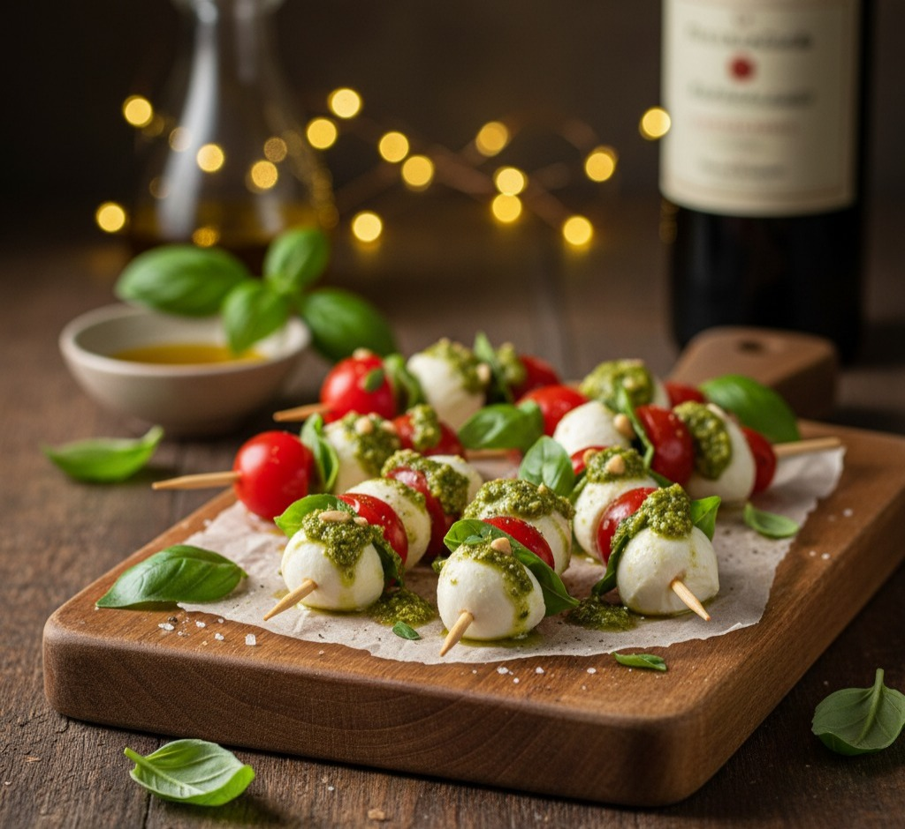
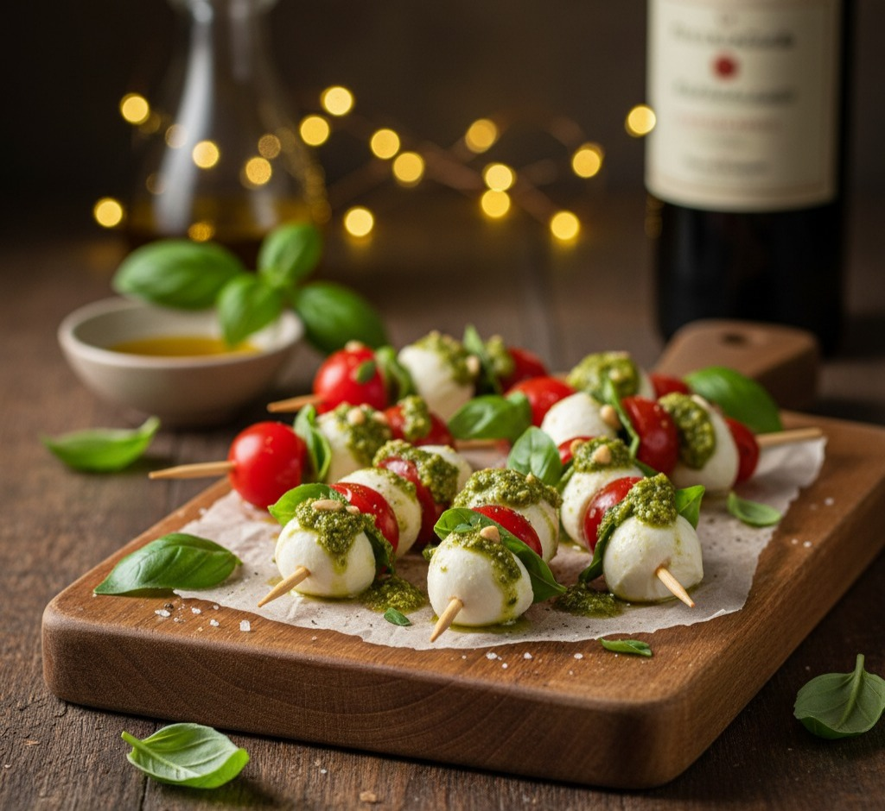

Entrada
-
Espetinho caprese com molho pesto
 -
Pastéis assados de carne e queijo

Espetinho caprese com molho pesto
Pastéis assados de carne e queijo
Moussaka (lasanha de berinjela com carne moída)

Filé ao molho madeira

Frango ao molho de mostarda e mel

Arroz branco

Legumes salteados na manteiga

Salada mediterrânea

Pavê de chocolate com frutas vermelhas

Brigadeiro de colher em copinhos

Pão de alho caseiro

Vinagrete tradicional

Salada de folhas verdes com molho de mostarda e mel

Espetinho de frango com bacon e pimentão

Linguiça

Fraldinha

Arroz branco
Salada de maionese cremosa

Vinagrete
Farofa crocante com bacon, linguiça e cebola